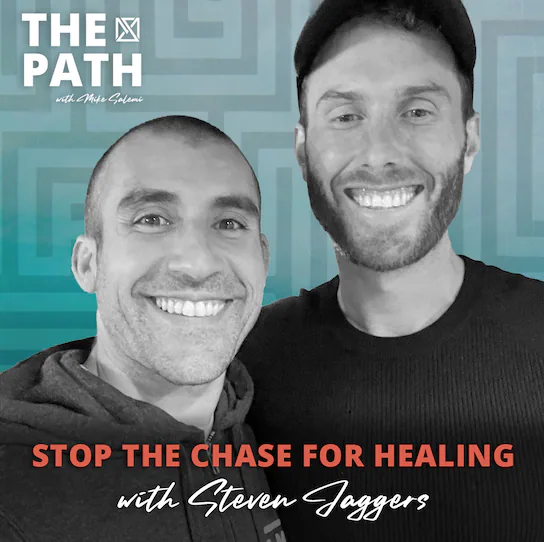

B874 · Stop the Chase for Healing
Hi {first_name},
Breath is the only mechanism in the body that we do both consciously and unconsciously. It can be the access point to understanding parts of ourselves that we may have disconnected from over the years. I’ve always been interested in breathwork in regards to enhancing performance and now I’m aware of so many other applications like trauma healing and emotional release. This episode is a breathwork masterclass with the founder of somatic breathwork, Steven Jaggers. I know you’re going to learn a ton from this one! In Episode #20 of The Path, Steven and I discuss:

Click here to listen on Apple.
Click here to listen on Spotify. Yours in Health, Mike
P.S. If you would like to experience a private virtual Somatic Breathwork experience and get 25% off for your first session, fill out a contact form here.
For practioners looking to get certified in Somatic Breathwork, use code “Micheal3463” at www.somaticbreathwork.com for $175 off of the Somatic Breathwork Certification.
Lastly, sign up for the Kettlebell Lifestyle program and use code “path20” for 20% off for being a subscriber of The Path.
|